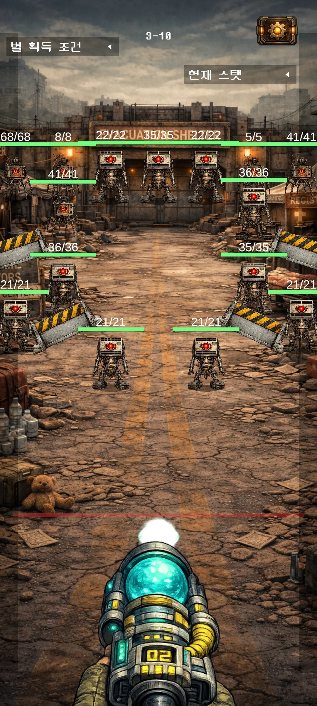
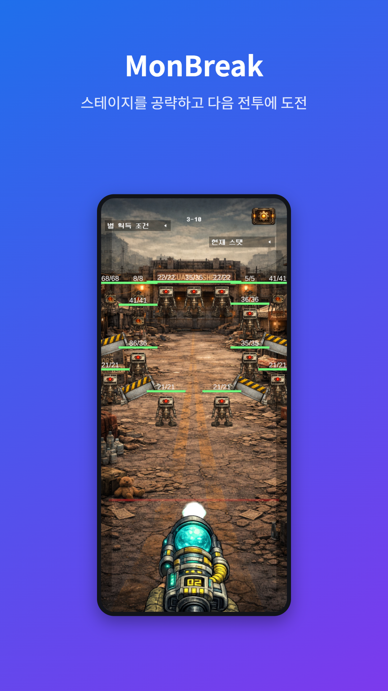
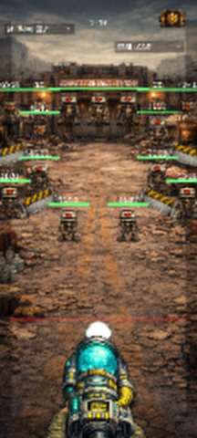

파일을 넣은 다음,
결과가 어떻게 달라질까요?
MonBreak의 게임 화면과 아이콘으로 까치툴 5개를 실행했습니다. 같은 입력 파일과 설정으로 따라 할 수 있도록 결과 파일도 함께 제공합니다.
1. 게임 화면: 1.99MiB에서 427KiB로
세로로 긴 게임 화면을 웹에서 공유할 때, 원본 해상도를 유지하면서 용량을 줄여 보았습니다. 원본 전투 화면 JPG는 1080×2400px, 2,085,735바이트입니다.
- 이미지 용량 줄이기에서 원본을 선택합니다.
- 압축 방식은 품질 지정, 품질은 80, 출력은 WebP로 정합니다. 크기 제한은 끕니다.
- 압축한 뒤 받기를 누르고 원본과 같은 크기로 확대해 작은 글자와 선을 비교합니다.
| 항목 | 원본 JPG | WebP 품질 80 |
|---|---|---|
| 해상도 | 1080×2400px | 1080×2400px |
| 파일 크기 | 2,085,735바이트 | 437,286바이트 |
| 원본 대비 감소 | — | 약 79.0% |


10KB를 목표로 하면 실패했습니다
같은 파일에서 크기 제한을 끄고 목표 용량을 10KB로 바꾸면, 최저 품질에서도 목표를 맞추지 못했다는 안내가 나옵니다. 품질만 계속 낮추기보다 긴 변 크기를 줄이거나 제출 한도를 다시 확인하는 편이 낫습니다. 화면 속 작은 글자를 읽어야 한다면 특히 해상도 축소 전후를 비교하세요.
압축 결과 받기같은 설정으로 압축하기2. 게임 화면 두 장을 하나의 PDF로
전투 화면과 상점 화면을 순서대로 묶는 예시입니다. 이 작업은 이미지 두 장을 PDF 페이지로 넣습니다. 이미지 속 글자를 선택 가능한 텍스트로 변환하는 작업은 아닙니다.
- 전투 화면과 상점 화면을 받습니다.
- PDF 편집기에 전투 화면을 먼저, 상점 화면을 다음으로 넣습니다. 순서가 다르면 페이지 화살표로 옮깁니다.
- 전체 2장인지 확인하고 하나의 PDF로 저장을 누릅니다.
{kind=link}
저장 파일을 다시 열어 2페이지인 것을 확인했습니다. 각 페이지는 1080×2400pt이며 A4 규격이 아닙니다. A4로 인쇄할 문서라면 이미지를 PDF로에서 용지 크기를 지정하는 편이 적합합니다.
확인할 것은 페이지 수뿐 아니라 전투 → 상점 순서, 회전 방향, 글자 가독성입니다. 이미지 두 장이 들어간 결과는 약 3.69MiB로, PDF로 묶는다고 자동으로 압축되지는 않습니다.
2페이지 결과 PDF 받기PDF 편집기 열기3. 512px 아이콘에서 Android 파일 묶음 만들기
MonBreak 아이콘 원본은 512×512px입니다. 앱 아이콘 생성기의 기본 선택인 Android 런처·적응형 아이콘·Play 스토어용 아이콘을 켜고, 여백 0%, 단색 배경과 모서리 자르기는 끈 상태로 내보냈습니다.
{kind=link}
| 출력 종류 | ZIP에서 확인할 것 |
|---|---|
| 런처 아이콘 | mipmap-mdpi부터 xxxhdpi까지 48·72·96·144·192px |
| 적응형 아이콘 | 밀도별 전경·배경 PNG와 mipmap-anydpi-v26의 XML 2개 |
| Play 등록용 | android/playstore/ic_launcher-512.png, 512×512px |
ZIP의 PNG 해상도와 XML 파일 존재 여부를 확인했습니다. 적응형 아이콘이 원형·둥근 사각형에서 잘리는지는 앱 프로젝트에 적용한 뒤 런처에서 추가 확인해야 합니다. 이 예시만으로 스토어 승인을 검증한 것은 아닙니다.
이 원본으로 1024px iOS 아이콘을 만들면 확대가 들어갑니다. iOS도 함께 준비한다면 가능하면 더 큰 원본부터 사용하세요. 이번 ZIP에는 iOS와 웹 파비콘을 포함하지 않았습니다.
실제 생성한 아이콘 ZIP 받기아이콘 생성기 열기4. 긴 게임 화면에 설명을 붙인 스토어 이미지
같은 전투 화면을 스토어 스크린샷 생성기에 넣고 1080×1920 규격을 사용했습니다. 큰 문구는 MonBreak, 작은 문구는 “스테이지를 공략하고 다음 전투에 도전”입니다. 프레임과 그림자는 기본값으로 켜 두고, 화면 크기는 78%, 글자는 위쪽에 배치했습니다.

출력 크기가 맞는 것과 내용이 읽히는 것은 별개입니다. 결과를 휴대폰에서 보면서 제목이 잘리지 않는지, 게임 화면이 너무 작아지지 않았는지, 홍보 문구가 화면에서 실제로 확인되는 기능을 설명하는지 살펴보세요. 최종 등록 시에는 해당 스토어의 현재 규격을 다시 확인해야 합니다.
스토어 이미지 원본 받기직접 이미지 구성하기5. 작은 화면의 2배 확대: 글자 복원과는 다릅니다
확대의 한계를 확인하기 위해 전투 화면을 108×240px로 줄인 테스트 샘플을 사용했습니다. 원래부터 이 크기로 촬영된 사진은 아닙니다. 사진 화질 높이기에서 2배·PNG를 선택해 처리했습니다.

가로·세로가 각각 두 배가 되므로 픽셀 수는 네 배가 됩니다. 이 사실만으로 화면의 작은 글자나 숫자가 정확하게 복원됐다고 볼 수는 없습니다. 작은 UI 글자를 읽기 위한 목적이라면 업스케일 결과를 추측해서 읽기보다 원래 1080×2400px 화면을 사용하는 편이 낫습니다.
이번 예시는 파일의 출력 해상도와 완료 여부를 확인한 것입니다. 모든 이미지의 품질을 평가하는 벤치마크는 아닙니다. 처리 기기에 따라 속도가 다르며, 얼굴·증빙 문서처럼 원래 정보가 중요한 경우 AI가 만든 디테일을 사실로 취급하지 마세요.
작은 입력 샘플 받기AI 2배 결과 받기화면별 사용 순서와 모델의 한계는 AI 업스케일 사용 기록에서 더 자세히 확인할 수 있습니다.
같은 결과를 확인하는 순서
- 먼저 입력 파일과 설정이 예시와 같은지 확인합니다.
- 다운로드한 파일을 다시 열어 크기, 페이지 수, 순서와 내용을 확인합니다.
- 압축·AI 처리 결과는 원본과 나란히 비교하고, 목적에 맞지 않으면 원본을 유지합니다.
예시에는 K-magpie가 제작한 MonBreak의 이미지가 사용되었습니다. 제공한 결과 파일은 도구를 따라 해보기 위한 자료이며, 이미지의 재판매나 별도 앱 브랜드로의 사용을 허용한다는 뜻은 아닙니다.
다른 결과나 오류를 발견했다면 support@kmagpie.com으로 도구 이름, 브라우저 버전과 설정을 알려주세요. 개인정보가 담긴 원본 파일을 보내실 필요는 없습니다.